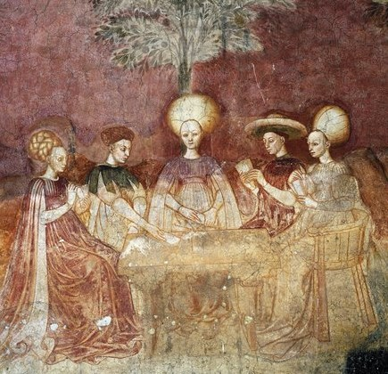

El Tarot Visconti Sforza
Un Juego de la Nobleza Renacentista
Lectura del Tarot en el Siglo XV
La baraja de tarot Visconti-Sforza es una de las más antiguas y famosas que se conservan. Creada en el siglo XV en Milán, fue un encargo de la poderosa familia Visconti para celebrar el matrimonio entre Bianca Maria Visconti y Francesco Sforza. Sus naipes, lujosamente ilustrados, son considerados los prototipos de las barajas de tarot modernas y un testimonio del arte y la opulencia del Renacimiento italiano.
LinkFamilia Visconti
Una de las familias más poderosas de la nobleza italiana. Su mecenazgo en las artes fue notable, encargando las primeras barajas de tarot que se conservan, iniciadas por el duque Filippo Maria Visconti.
Familia Sforza
Una familia de condottieri, su ascenso se consolida con el
matrimonio de Francesco Sforza y Bianca Visconti.
Continuaron y completaron las barajas, por lo que las cartas,
simbolizando su unión.

Miniaturas renacentistas:
Pintadas a mano con pigmentos naturales, pan de oro y plata.
Figuras detalladas:
Representaciones de la nobleza milanesa con vestimenta de la época.
Cartas de gran tamaño:
Más grandes que las barajas modernas, realzando su majestuosidad.
Simbología única:
Algunos arcanos tienen variaciones con respecto a los tarots tradicionales.